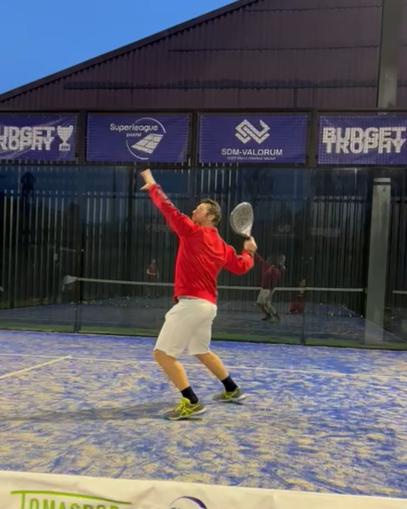

Mini
€249 / maand
Eerste 3 maanden vast, daarna maandelijks opzegbaar
- 6 posts per maand
- Stories 3 keer per week
- Visuele huisstijl
- Teksten en hashtags
- Ik plan alles in
- Maandelijkse check-in
Social media voor tennis- en padelclubs · Waasland
Ik ben Jari, padeltrainer en sportmens. Ik weet hoe een club leeft. Ik zorg dat nieuwe leden dat ook online zien, zonder dat jij er tijd in steekt.

Voor we begonnen: weinig posts, geen herkenbare stijl. Na 6 weken: 12 posts, 3.367 mensen bereikt en een maandagsles die bijna volzet was. Zonder één euro advertenties.
"Ik ben coach en lesgever. Social media is niet mijn ding. Jari heeft onze Instagram van nul opgebouwd. In 6 weken bereikten we meer dan 3.300 mensen en zat onze maandagsles bijna vol. Ik hoef er zelf niets aan te doen. Hij begrijpt de sport en onze cursisten, en dat merk je."

Ik speelde voetbal bij de jeugd van Sporting Lokeren, daarna basket en in de zomer tennis. Tot mijn knie het opgaf: vier operaties in vier jaar.
Ik ontdekte padel toen bijna niemand het hier kende. Ondertussen ben ik al vijf jaar padeltrainer, vandaag bij Jan Stilten Padel Academy.
Als trainer zie ik hoe een club leeft. En hoe weinig daarvan op Instagram komt. Daarom begon ik SportGrowth Media.
De bar na een match, je trainers, volle terreinen, je sponsors. Niet alleen affiches, maar het gevoel van je club.
Posts, reels en stories in de huisstijl van je club, ingepland op vaste momenten.
Hoeveel mensen je bereikte, wat werkte en wat we de volgende maand anders doen.

Vijf stappen. Jij hoeft alleen beeld aan te leveren en goed te keuren.
We bekijken je club, je leden en wat je wil bereiken. Ongeveer 1 uur.
Welke posts, wanneer en voor wie. Afgestemd op je seizoen.
Jij levert foto's en video's aan, ik maak er posts van. Een shoot ter plaatse kan tegen meerprijs.
Niets gaat online zonder jouw ja. Aanpassen mag altijd.
Ik plan alles in. Vanaf Starter krijg je elke maand een rapport.
Iets dringends, zoals een uitslag of een last-minute evenement? Stuur een bericht via WhatsApp of mail.
Vaste prijs per maand. Alles inbegrepen.
€249 / maand
Eerste 3 maanden vast, daarna maandelijks opzegbaar
€399 / maand
Minimum 3 maanden
€599 / maand
Minimum 6 maanden
Tennis en padel, of fitness en padel in één club? Dan komt er €50 tot €80 per maand bij, afhankelijk van de club. Twijfel je welk pakket past? Vraag eerst de gratis analyse aan.
Ja, jullie leveren het beeld aan. Ik zeg je precies wat je best filmt en fotografeert. Geen tijd? Een shoot ter plaatse kan tegen meerprijs.
Beeld doorsturen en de posts goedkeuren. De rest doe ik: het plan, de teksten, de vormgeving en het inplannen.
Mini: na de eerste 3 maanden maandelijks opzegbaar. Starter: minimum 3 maanden. Growth: minimum 6 maanden.
Een korte video waarin ik het Instagram-profiel van je club bekijk. Je krijgt een score op 100, de 3 grootste verbeterpunten en 1 ding dat je dezelfde dag kan aanpassen. Zonder verplichting.
Stuur me de Instagram van je club. Binnen 48 uur krijg je een korte video met een score op 100, de 3 grootste verbeterpunten en 1 ding dat je dezelfde dag kan aanpassen. Gratis.